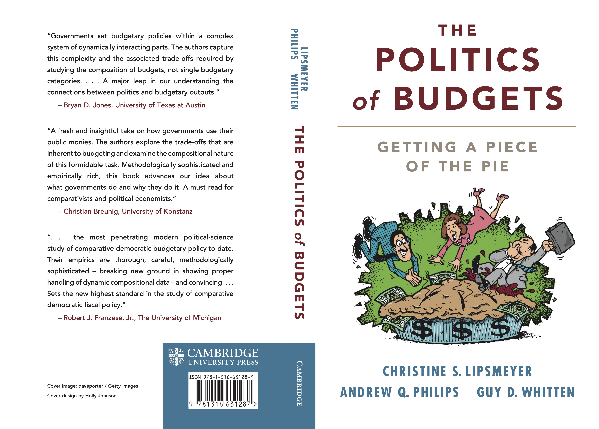

The Politics of Budgets: Getting a Piece of the Pie

about the book
While governments prefer to alter budgets to fit their ideological stances, the domestic and international contexts can facilitate or constrain behavior. The Politics of Budgets demonstrates when governments do and do not make preferred budgetary changes. It argues for an interconnected view of budgets and explores both the reallocation of expenditures across policy areas and the interplay among budgetary components. While previous scholars have investigated how politics and economics shape a single budgetary category, or collective categories, this methodologically rich study analyzes data for thirty-three countries across thirty-five years to provide a more comprehensive theoretical approach: a 'holistic' framework about the competition and contexts around the budgetary process and an of examination of how and when these factors affect the budgetary decision-making processes.
Chapter 1: Introduction
Chapter 2: A Theory of Budgets
Chapter 3: Political Competition and the Expenditure Pie
Chapter 4: The Effects of Elections, Economics and International Shocks on the Expenditure Pie
Chapter 5: Four Sides of the Budgetary Ledger
Chapter 6: The Effects of Elections, Economics and External Shocks on the Budgetary Ledger
Chapter 7: Conclusion: The Budgetary Mix.
about the authors
Christine S. Lipsmeyer is a professor in the Department of Political Science at Texas A&M University. Her research interests merge many areas of political science, including comparative political economy, public policy, governing institutions, and political behavior.
Andrew Q. Philips is an associate professor in the Department of Political Science, University of Colorado Boulder. His research interests are in political economy and comparative politics, as well as methodological interests in machine learning, time series, panel and compositional data.
Guy D. Whitten is the Cullen-McFadden Professor of Political Science, as well as the Director of the European Union Center, at Texas A&M University. His research focuses on comparative political economy, comparative public policy, and political methodology.